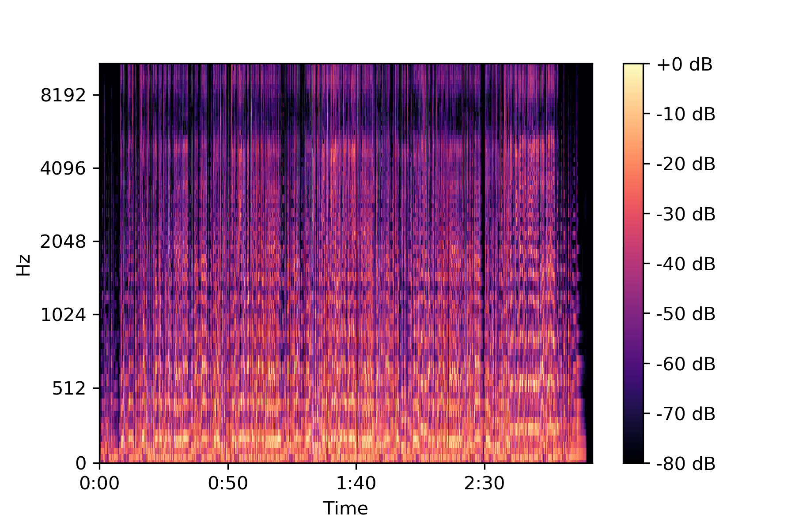
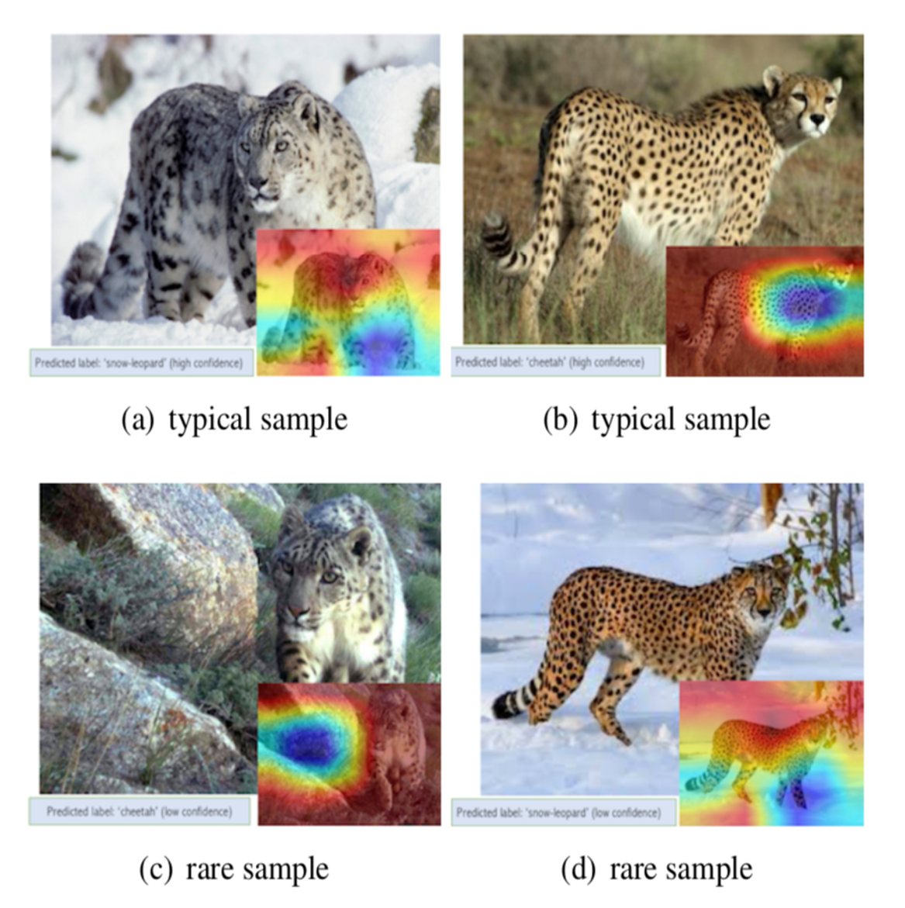
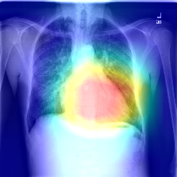

|
Research
I am interested in solving challenging problems on computer vision and music information retrieval. Below is a summary of some of my major projects during my undergrad years.
|
|

|
Exploring Knowledge Distillation Techniques in Singing Voice Detection
Bachelor's Thesis
Knowledge Distillation with state-of-the-art voice detection models as teachers can substantially boost performance of smaller student models.
|
|

|
Addressing Target Shift in Zero-shot Learning using Grouped Adversarial Learning
Saneem Ahmed Chemmengath,
Samarth Bharadwaj,
Soumava Paul,
Suranjana Samanta,
Karthik Sankaranarayanan
arXiv preprint
Grouped Adversarial Learning (gAL) can reduce effects of target shift in zero-shot learning algorithms.
|
|

|
Jointly Learning Convolutional Representations to Compress Radiological Images and Classify Thoracic Diseases in the Compressed Domain
Ekagra Ranjan*, Soumava Paul*, Siddharth Kapoor, Aupendu Kar, Ramanathan Sethuraman
, Debdoot Sheet
ICVGIP, ACM, 2018 (Oral Presentation)
Code
Downscaling high resolution Chest X-Ray Images using an autoencoder (instead of usual interpolation techniques) leads to superior retention of important pathological features for thoracic disease classification.
|
|
{kind=link}